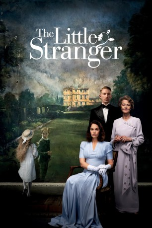

#10915 The Little Stranger
 
 IMDB-Wertung: 5.6 / 10
IMDB-Wertung: 5.6 / 10  Metascore: 67
Metascore: 67 
Es ist der lange, heiße Sommer 1948: Dr. Faraday ein angesehener Landarzt, wird auf das Anwesen Hundreds Hall eingeladen, das er sehr gut kennt. Als Kind einer dort arbeitenden Haushälterin hatte er es einige Male besucht, erkennt das Haus 30 Jahre später allerdings kaum wieder, denn der alte Glanz ist einem schleichenden Verfall gewichen. Der dort lebenden Familie Ayres gehört das Anwesen bereits seit über 200 Jahren und nun ist eines der Familienmitglieder in Not. Roderick Ayres hat ein schweres Kriegstrauma erlitten und Faraday soll ihm unter den wachsamen Augen von Rodericks Mutter und Schwester helfen. Als es in dem alten Gemäuer zu unerklärlichen Ereignissen kommt, wird dem Arzt klar, dass mit dem Haus – und womöglich auch mit der Familie Ayres – etwas ganz und gar nicht stimmt…
Jahr: 2018
Dauer: 111 Minuten
FSK:
Land: England Studio: Focus FeaturesTonspuren: DD5.1 - ,
Untertitel: Englisch,
Auflösung: 1080p (1920x1040) Größe: 8140 MB
Genre: Horror, Drama, Mystery
Regisseur: Lenny Abrahamson
Drehbuch: Lucinda Coxon, Sarah Waters
Soundtrack: Stephen Rennicks
Darsteller:
 Domhnall Gleeson als Dr. Faraday
Domhnall Gleeson als Dr. Faraday Will Poulter als Roderick Ayres
Will Poulter als Roderick Ayres Ruth Wilson als Caroline Ayres
Ruth Wilson als Caroline Ayres- Liv Hill als Betty
 Charlotte Rampling als Mrs. Ayres
Charlotte Rampling als Mrs. Ayres- Oliver Zetterström als Young Faraday
- Kathryn O'Reilly als Elizabeth Faraday
- Camilla Arfwedson als Young Mrs Ayres
- Tipper Seifert-Cleveland als Susan Ayres
- Peter Ormond als Colonel Ayres
- Richard Campbell als Photographer
 Harry Hadden-Paton als Dr. Granger
Harry Hadden-Paton als Dr. Granger Anna Madeley als Anne Granger
Anna Madeley als Anne Granger Sarah Crowden als Miss Dabney
Sarah Crowden als Miss Dabney- Clive Francis als Mr. Rossiter
 Elizabeth Counsell als Mrs. Rossiter
Elizabeth Counsell als Mrs. Rossiter- Nicholas Burns als Peter Baker-Hyde
- Kate Phillips als Diana Baker-Hyde
- Dixie Egerickx als Gillian Baker-Hyde
- Oliver Chris als Tony Morley
- Alison Pargeter als Maid
 Amy Marston als Mrs. Blundell
Amy Marston als Mrs. Blundell- Lloyd Hutchinson als Babb
- Josh Dylan als Bland
- Charlie Anson als Bespectacled Man
- Lorne MacFadyen als Dr. Calder
 Ann Firbank als Aunt Cissie
Ann Firbank als Aunt Cissie- Angela Sims als Dress Shop Assistant
- Darren Kent als Young Male Patient
 Angus Wright als Coroner Ridell
Angus Wright als Coroner Ridell- Thea Balich als Surgical Assistant (uncredited)
- Susan Bradfield als Dancing Nurse (uncredited)
- Lorna Rose Harris als Nurse (uncredited)
- Mike Nettleship als Tea party guest (uncredited)
 Jeremy Oliver als Farmer (uncredited)
Jeremy Oliver als Farmer (uncredited) Tim Plester als (uncredited)
Tim Plester als (uncredited)- Josephine Rogers als Nurse (uncredited)
- Sam Rose als Villager (uncredited)
 Stephen Samson als Builder (uncredited)
Stephen Samson als Builder (uncredited)- Phil Tillott als Town Mayor (uncredited)
 Christian Wolf-La'Moy als The Vicar (uncredited)
Christian Wolf-La'Moy als The Vicar (uncredited)- Eddie Toll als Faraday's Father
- Bailey Rogers als Young Boy at Fete
- Maggie McCarthy als Mrs. Ravensdale
- Martin Carroll als Dr. Warren
- Archie Bradfield als Alan Blundell
- Shaughan Seymour als Hewitt
- Alice Bailey Johnson als Brenda
 Richard McCabe als Dr. Seeley
Richard McCabe als Dr. Seeley- Ferne als 'Gyp'
Datei: X:\2018(G-M)\Little Stranger, The (2018, FSK, 1920x1040).mkv seit 03.04.2019
Festplatte: HD 2018(G-Z)-2019(A-Z)
 Es gibt insgesamt 138 Filme in der Gruppe '2018(G-M)'
Es gibt insgesamt 138 Filme in der Gruppe '2018(G-M)'